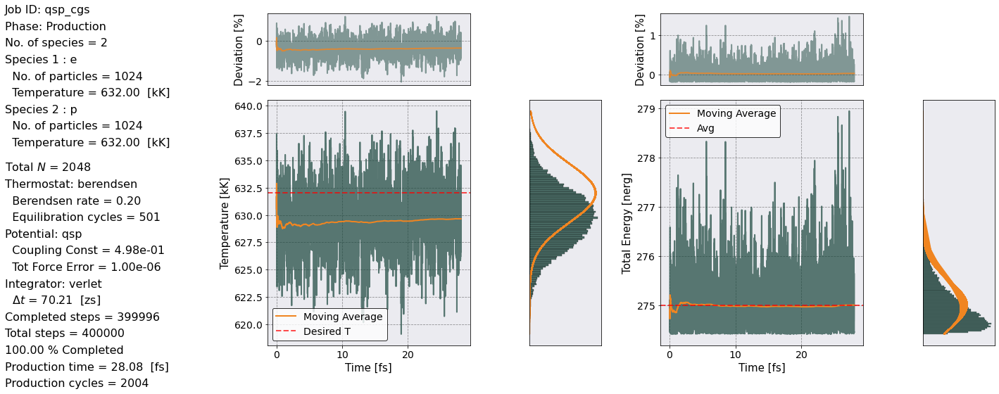
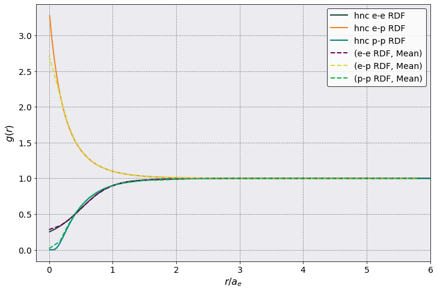
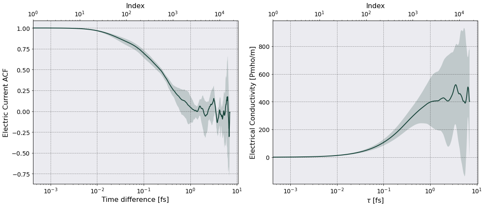
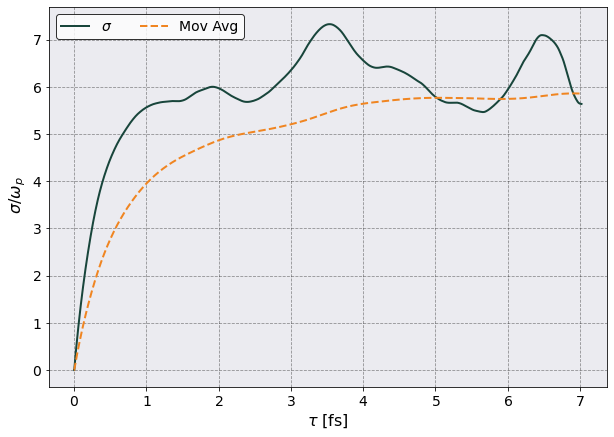

Quantum Statistical Potential Simulation#
The YAML input file can be found at input_file and this notebook at notebook.
[1]:
# Import the usual libraries
%pylab
%matplotlib inline
import os
plt.style.use('MSUstyle')
# Import sarkas
from sarkas.processes import Simulation, PostProcess, PreProcess
# Create the file path to the YAML input file
input_file_name = os.path.join('input_files', 'QSP_cgs.yaml')
Using matplotlib backend: Qt5Agg
Populating the interactive namespace from numpy and matplotlib
[2]:
# sim = PreProcess(input_file_name)
# sim.setup(read_yaml=True)
# sim.run(loops = 20,
# pppm_estimate=True)
[3]:
# sim = Simulation(input_file_name)
# sim.setup(read_yaml=True)
# sim.run()
[4]:
postproc = PostProcess(input_file_name)
postproc.setup(read_yaml=True)
[5]:
# Equilibration check
postproc.therm.setup(postproc.parameters)
# postproc.therm.temp_energy_plot(postproc, phase='equilibration')
[6]:
# Production check
postproc.therm.temp_energy_plot(postproc, phase='production')

[7]:
# Radial Distribution Function
postproc.rdf.setup(postproc.parameters)
postproc.rdf.compute()
# Grab HNC data for comparison
hnc_r, hnc_gee, hnc_gei, hnc_gii = np.loadtxt('hnc_gall.out', unpack=True)
Radial Distribution Function Calculation Time: 0 sec 62 msec 25 usec 174 nsec
[8]:
fig, ax = plt.subplots(1,1, figsize=(10,7))
ax.plot(hnc_r , hnc_gee, label = 'hnc e-e RDF')
ax.plot(hnc_r , hnc_gei, label = 'hnc e-p RDF')
ax.plot(hnc_r , hnc_gii, label = 'hnc p-p RDF')
postproc.rdf.plot(scaling = postproc.parameters.electron_WS_radius,
y = [('e-e RDF', "Mean"),
('e-p RDF', "Mean"),
('p-p RDF', "Mean")
],
ax = ax,
ls = '--')
ax.legend()
ax.set(xlim = (-0.2, 6), xlabel = r'$r/a_e$', ylabel = r"$g(r)$")
[8]:
[(-0.2, 6.0),
Text(0.5, 135.8333333333334, '$r/a_e$'),
Text(61.22856648763023, 0.5, '$g(r)$')]

[9]:
from sarkas.tools.observables import ElectricCurrent
from sarkas.tools.transport import TransportCoefficients
[10]:
ec = ElectricCurrent()
ec.setup(postproc.parameters, no_slices = 4)
#ec.compute()
ec.parse()
[11]:
ec.dataframe
[11]:
| Time | e Electric Current | p Electric Current | Electric Current | ||||||||||||||||
|---|---|---|---|---|---|---|---|---|---|---|---|---|---|---|---|---|---|---|---|
| NaN | X | Y | Z | X | Y | Z | X | Y | Z | ||||||||||
| NaN | Mean | Std | Mean | Std | Mean | Std | Mean | Std | Mean | Std | Mean | Std | Mean | Std | Mean | Std | Mean | Std | |
| 0 | 0.000000e+00 | -1.592979 | 4.266312 | 0.313781 | 4.696336 | 2.091885 | 4.912189 | -0.000868 | 0.002324 | 0.000171 | 0.002558 | 0.001139 | 0.002675 | -1.593846 | 4.268636 | 0.313952 | 4.698894 | 2.093025 | 4.914864 |
| 1 | 4.212480e-19 | -1.556820 | 4.255951 | 0.261228 | 4.727619 | 2.129823 | 4.919757 | -0.000848 | 0.002318 | 0.000142 | 0.002575 | 0.001160 | 0.002679 | -1.557668 | 4.258269 | 0.261370 | 4.730193 | 2.130983 | 4.922436 |
| 2 | 8.424960e-19 | -1.514293 | 4.250659 | 0.212417 | 4.757823 | 2.165856 | 4.927102 | -0.000825 | 0.002315 | 0.000116 | 0.002591 | 0.001180 | 0.002683 | -1.515118 | 4.252974 | 0.212533 | 4.760414 | 2.167036 | 4.929785 |
| 3 | 1.263744e-18 | -1.470321 | 4.251131 | 0.169078 | 4.780538 | 2.200074 | 4.932380 | -0.000801 | 0.002315 | 0.000092 | 0.002604 | 0.001198 | 0.002686 | -1.471122 | 4.253446 | 0.169170 | 4.783142 | 2.201272 | 4.935066 |
| 4 | 1.684992e-18 | -1.428866 | 4.254351 | 0.127651 | 4.795915 | 2.235364 | 4.932165 | -0.000778 | 0.002317 | 0.000070 | 0.002612 | 0.001217 | 0.002686 | -1.429644 | 4.256668 | 0.127721 | 4.798526 | 2.236581 | 4.934851 |
| ... | ... | ... | ... | ... | ... | ... | ... | ... | ... | ... | ... | ... | ... | ... | ... | ... | ... | ... | ... |
| 16661 | 7.018413e-15 | -5.074025 | 6.949550 | 1.247491 | 4.710895 | 2.787523 | 4.774233 | -0.002763 | 0.003785 | 0.000679 | 0.002566 | 0.001518 | 0.002600 | -5.076789 | 6.953335 | 1.248170 | 4.713460 | 2.789041 | 4.776834 |
| 16662 | 7.018834e-15 | -5.047354 | 6.958353 | 1.189807 | 4.720378 | 2.837681 | 4.749905 | -0.002749 | 0.003790 | 0.000648 | 0.002571 | 0.001545 | 0.002587 | -5.050103 | 6.962143 | 1.190455 | 4.722948 | 2.839226 | 4.752492 |
| 16663 | 7.019255e-15 | -5.019247 | 6.964106 | 1.131542 | 4.733726 | 2.891892 | 4.732832 | -0.002734 | 0.003793 | 0.000616 | 0.002578 | 0.001575 | 0.002578 | -5.021981 | 6.967898 | 1.132158 | 4.736304 | 2.893467 | 4.735410 |
| 16664 | 7.019677e-15 | -4.991651 | 6.969232 | 1.069791 | 4.753368 | 2.948593 | 4.725178 | -0.002719 | 0.003796 | 0.000583 | 0.002589 | 0.001606 | 0.002573 | -4.994370 | 6.973027 | 1.070374 | 4.755957 | 2.950199 | 4.727751 |
| 16665 | 7.020098e-15 | -4.965582 | 6.977188 | 1.003926 | 4.777691 | 3.006825 | 4.728724 | -0.002704 | 0.003800 | 0.000547 | 0.002602 | 0.001638 | 0.002575 | -4.968286 | 6.980988 | 1.004473 | 4.780293 | 3.008462 | 4.731299 |
16666 rows × 19 columns
[12]:
tc = TransportCoefficients(postproc.parameters)
tc.electrical_conductivity(ec, "ElectricalConductivity")
====================== Electrical Conductivity =======================
Data saved in:
Simulations/qsp_cgs/PostProcessing/TransportCoefficients/Production/ElectricalConductivity_qsp_cgs.h5
Simulations/qsp_cgs/PostProcessing/TransportCoefficients/Production/ElectricalConductivity_slices_qsp_cgs.h5
No. of slices = 4
No. dumps per slice = 2777
Time interval of autocorrelation function = 7.0205e-15 [s] ~ 501 w_p T

[13]:
tc.conductivity_df
[13]:
| Time | Electrical Conductivity | ||
|---|---|---|---|
| NaN | Mean | Std | |
| 0 | 0.000000e+00 | 0.000000e+00 | 0.000000e+00 |
| 1 | 4.212480e-19 | 0.000000e+00 | 0.000000e+00 |
| 2 | 8.424960e-19 | 5.412416e+14 | 9.348701e+13 |
| 3 | 1.263744e-18 | 1.082391e+15 | 1.869658e+14 |
| 4 | 1.684992e-18 | 1.623361e+15 | 2.804388e+14 |
| ... | ... | ... | ... |
| 16661 | 7.018413e-15 | 4.022931e+17 | 3.956391e+17 |
| 16662 | 7.018834e-15 | 4.022840e+17 | 3.957253e+17 |
| 16663 | 7.019255e-15 | 4.022752e+17 | 3.958105e+17 |
| 16664 | 7.019677e-15 | 4.022667e+17 | 3.958949e+17 |
| 16665 | 7.020098e-15 | 4.022586e+17 | 3.959783e+17 |
16666 rows × 3 columns
[14]:
rescaling = 1.0/ec.total_plasma_frequency
fig, ax = plt.subplots(1,1, figsize=(10,7))
ax.plot(tc.conductivity_df["Time"].iloc[:,0]*1e15,
tc.conductivity_df[("Electrical Conductivity", "Mean")] * rescaling,
label = r'$\sigma$')
ax.plot(tc.conductivity_df["Time"].iloc[:,0]*1e15, tc.conductivity_df[("Electrical Conductivity", "Mean")].expanding().mean() * rescaling,
ls = '--', label = r'Mov Avg')
ax.legend(ncol = 2)
ax.set(xlabel = r"$\tau$ [fs]",ylabel = r" $\sigma/\omega_p$")
[14]:
[Text(0.5, 0, '$\\tau$ [fs]'), Text(0, 0.5, ' $\\sigma/\\omega_p$')]
